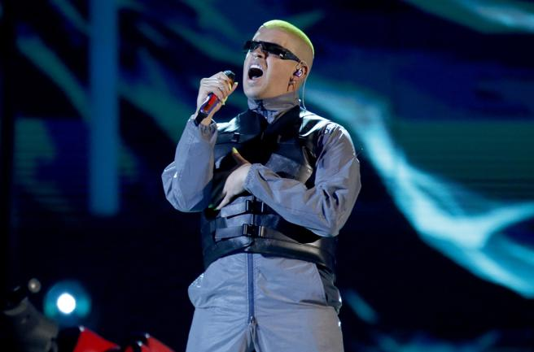

El puertorriqueño es especialista en ir dejando mensajes ocultos aunque, a decir verdad, en la entrevista que ofreció hace unos meses en Rolling Stone ya avanzó que en su mente rondaba la idea de cambiar la forma de hacer música que tiene. Nunca me retiraré de hacer esto. Tal vez me retira del ojo público y de las giras, porque estoy cansado y odio viajar. Me encantaría hacer música como cuando tenía 14 años, cuando era mi mejor pasatiempo. Ahora mismo estoy en el momento más feliz de mi carrera, porque estoy cumpliendo todos mis sueños. No hay un mejor sentimiento que cuando sabes que estás haciendo las cosas bien”, comentó. Los fans de Bad Bunny temen que sus presagios se hagan realidad aunque el artista, de momento, no ha querido dar más pistas sobre si realmente está pensando en retirarse o no.
